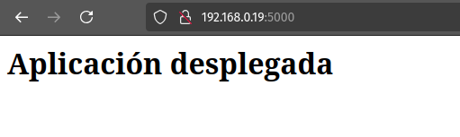
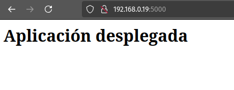
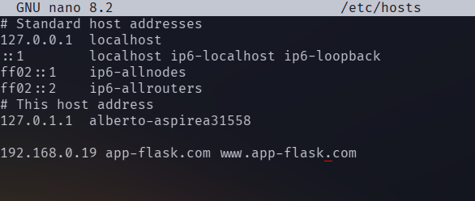

Práctica 3-5. Despliegue de una aplicación Flask
Instalación de prerrequisitos
Para instalar los paquetes necesarios para esta práctica hay que ejecutar:
sudo apt install nginx
sudo apt install python3-pip pipenv
De esta manera, tendremos instalados:
- Servidor Nginx.
- El gestor para paquetes de Python, pip.
- El gestor de entornos virtuales de Python, pipenv.
Podemos comprobar la correcta instalación de estas herramientas ejecutando:
sudo nginx -v
pip -V
pipenv --version
pip list # Mostrará todos los paquetes de Python instalados.
Despliegue de una aplicación de prueba
Creamos un directorio para almacenar el contenido de nuestro proyecto en /var/www, hacemos dueño a nuestro usuario y le damos los permisos necesarios para que pueda ser leído por cualquier usuario:
sudo mkdir /var/www/app
sudo chown -R alberto:www-data /var/www/app
sudo chmod -R 775 /var/www/app
Creamos un archivo '.env' en el directorio del proyecto con el siguiente contenido:
FLASK_APP=wsgi.py
FLASK_ENV=production
Iniciamos el entorno virtual e instalamos en él las dependencias de Flask y Gunicorn:
pipenv shell
pipenv install flask gunicorn
Creamos ahora una aplicación de prueba 'app.py':
from flask import Flask
app = Flask(__name__)
@app.route('/')
def index():
return '<h1>Aplicación desplegada</h1>
Y también un archivo 'wsgi.py', que será el encargado de ejecutar la aplicación principal:
from app import app
if __name__ == '__main__':
app.run(debug=False)
Tenemos que habilitar el puerto 5000:
sudo ufw allow 5000
Desplegamos la aplicación ejecutando:
flask run --host '0.0.0.0'
Y comprobamos que está en funcionamiento:

Para comprobar que Gunicorn funciona correctamente ejecutamos el comando:
gunicorn --workers 4 --bind 0.0.0.0:5000 wsgi:app
Y en el navegador veremos que también se ha desplegado la aplicación:

Aún dentro del enterno debemos comprobar la ruta desde la que se ejecuta gunicorn:
which gunicorn
# /home/alberto/.local/share/virtualenvs/app-1lvW3LzD/bin/gunicorn
Ahora podemos salir del entorno virtual:
deactivate
Creamos un archivo 'flask_app.service' en el directorio /etc/systemd/system/ para que se ejecute Gunicorn como si fuera un servicio del sistema. En mi caso, el contenido del archivo es:

E iniciamos el servicio y comprobamos que funciona correctamente como si fuera cualquier otro servicio del sistema:
sudo systemctl enable flask_app
sudo systemctl start flask_app
sudo systemctl status flask_app
Ahora sólo queda configurar Nginx y añadir el nombre de la página al archivo 'hosts'. En primer lugar, creamos un archivo de configuración en /etc/nginx/sites-available y creamos un enlace simbólico a este archivo en /etc/nginx/sites-enabled. El archivo tendrá este contenido:
server {
listen 80;
server_name app www.app;
access_log /var/log/nginx/app.access.log;
error_log /var/log/nginx/app.error.log;
location / {
include proxy_params;
proxy_pass http://unix:/var/www/app/flask_app.sock;
}
}
Creamos el enlace simbólico:
sudo ln -s /etc/nginx/sites-available/app ../sites-enabled
Reiniciamos Nginx y comprobamos que no hay errores:
sudo systemctl restart nginx
sudo nginx -t
sudo nginx status nginx
Ahora modificaremos en nuestra máquina anfitriona el archivo /etc/hosts para incluir el nombre de nuestra página y poder acceder con este nombre a través del navegador:

Y desde el navegador comprobamos que la aplicación funciona correctamente:

Cuestiones finales
- ¿Qué es un servidor WSGI?
Un servidor WSGI es un intermediario entre un servidor web (como Nginx) y una aplicación web escrita en Python (como una aplicación de Flask). Su función es dirigir las peticiones del navegador hechas por un cliente a la aplicación Python y devolver la respuesta generada por dicha aplicación.